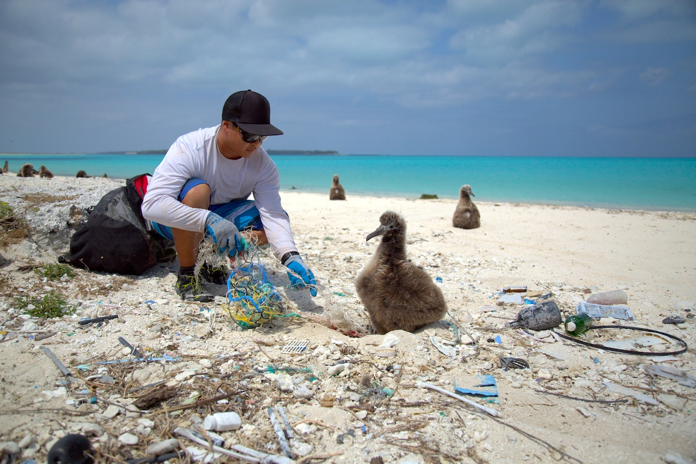

1. Animals like
2. Toothed Whales use sonar clicks to hunt, and plastic can bounce back and mimic
3. Oil spills and farm chemicals flow into the Sea and make Fish sick
1. Animals like
2. Toothed Whales use sonar clicks to hunt, and plastic can bounce back and mimic
3. Oil spills and farm chemicals flow into the Sea and make Fish sick

1. Plastic affects the ocean by toxic chemical Accumulation
2. As the Algae breaks down, it releases a Sulfur

1. Its important to clean the Ocean because its to protect
2. Fertilizer runoff causes large algae Blooms that suck Oxygen out of the water

1. When trash is dropped on city streets or parking lots, its washed by rain into streams
2. Improper waste disposal, street litter, and Overflowing trash cans

1. Up to 80% of Marine pollution starts on land then to rivers and oceans
2. Millions of Metric tons of plastic enter the Ocean yearly
3. Marine Mammals and
4. Larger items break down into tiny particles that are eaten by small fish